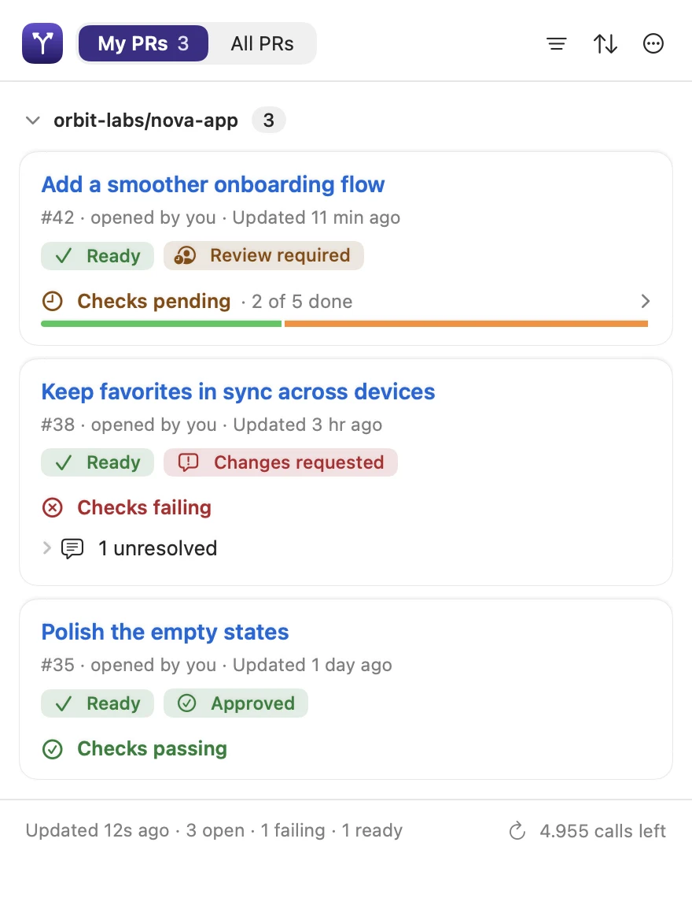
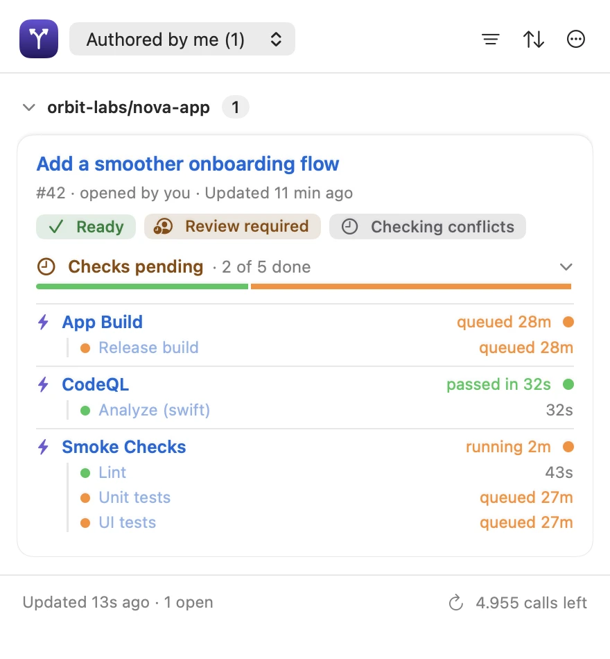
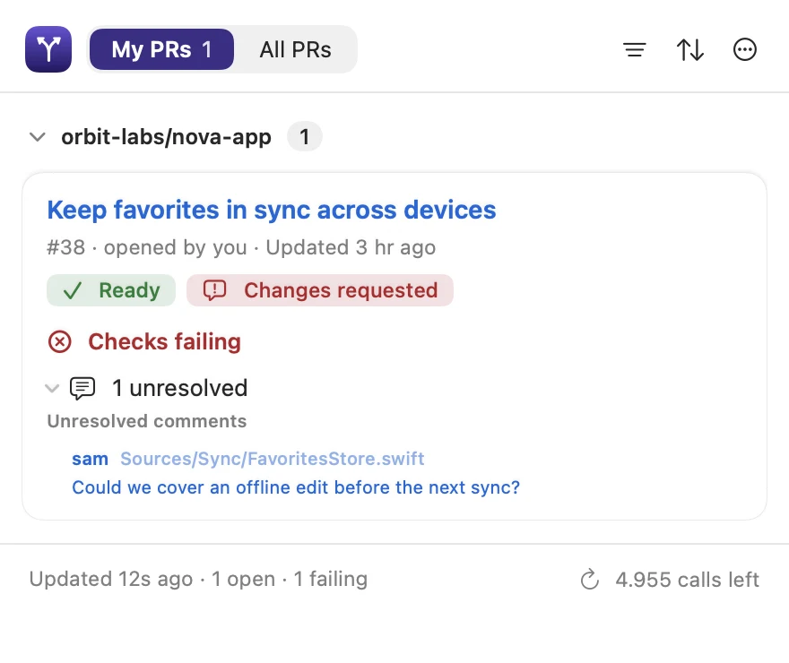
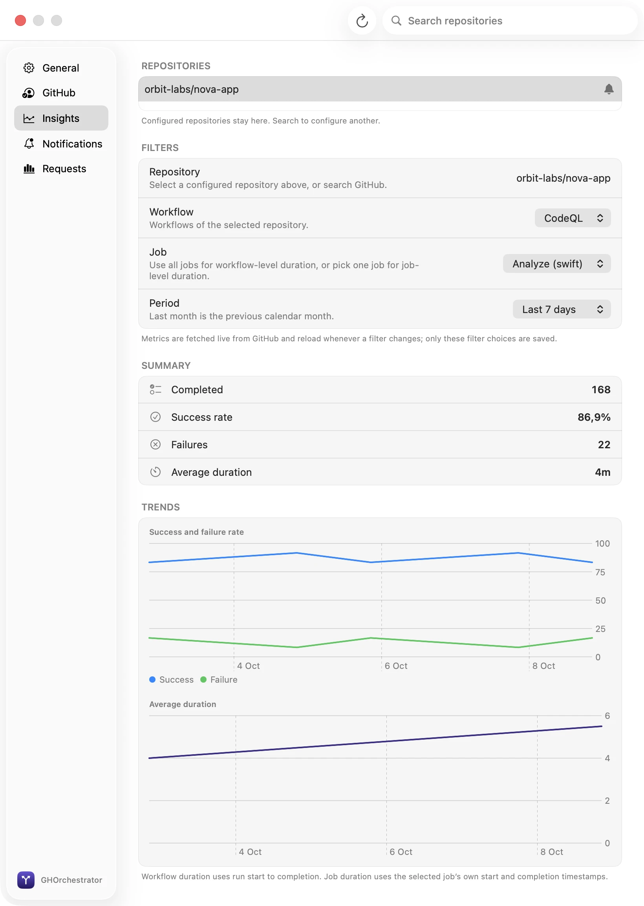

GitHub, in your menu bar
Less tab chaos.
More room to ship.
Keep pull requests, reviews and Actions within reach. A native Mac app for seeing what needs you, without breaking your flow.
macOS 15+ · Apple Silicon & Intel
Up and running
Two commands. Then back to work.
Install with Homebrew, open GHOrchestrator, sign in with GitHub and add the repositories you care about.
brew tap ipavlidakis/gh-orchestrator https://github.com/ipavlidakis/gh-orchestrator.git
brew install --cask ipavlidakis/gh-orchestrator/gh-orchestratorRequires Homebrew and macOS 15 or later.
One clear view
Know what needs you.
Your PRs, their checks, the conversation and the bigger picture. One click from the menu bar.


Pull requests, at a glance.
See your PRs or the whole team's. Find the next thing that needs your attention.


Checks, without the chase.
Inspect workflows and jobs inline. Retry failed jobs when GitHub allows it.


Keep reviews moving.
Find unresolved comments and jump straight to the conversation on GitHub.


See the bigger picture.
Explore Actions success rates and durations by repository, workflow and job.
Real app views, fictional repositories and pull requests. Settings shown with the flat appearance.